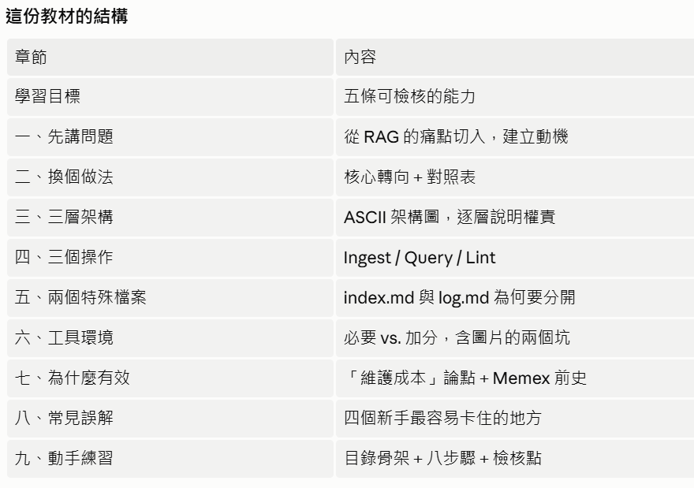
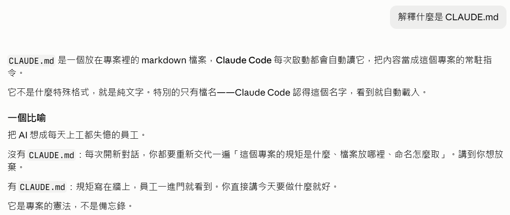
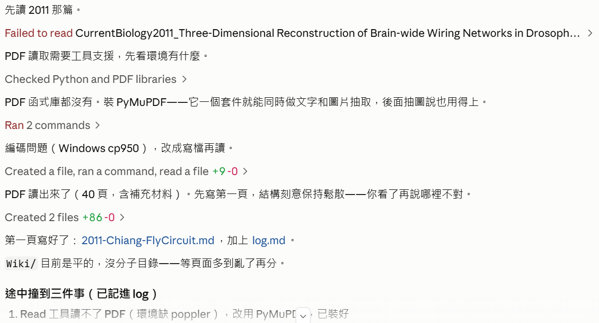
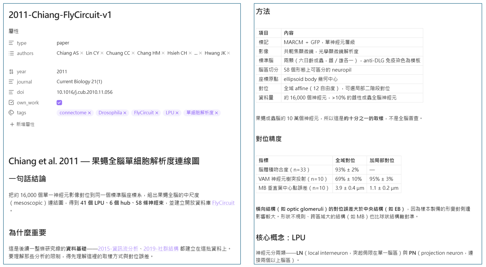
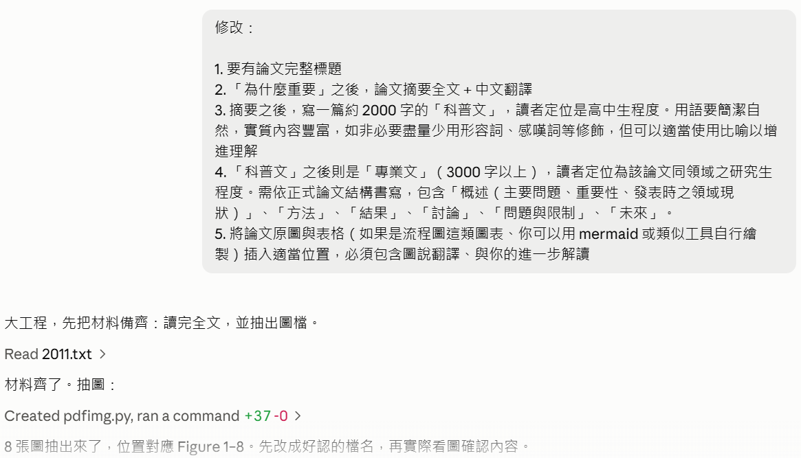
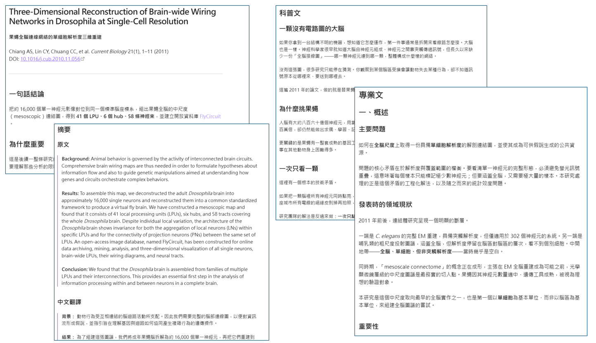

建置 LLM Wiki 的第一步
從一份 gist 到第一篇論文筆記。這裡完整記錄一次真實的工作階段——每一步的指令、 Agent 當下怎麼思考與操作、以及當時的畫面。
 播放教學影片 · 8 分 57 秒 · 在 YouTube 開啟 ↗
播放教學影片 · 8 分 57 秒 · 在 YouTube 開啟 ↗
怎麼讀這一頁
開一個新的工作階段
在 Claude Code 按下 New，跳出資料夾選擇視窗，指定工作資料夾為
EP01 什麼是 LLM-Wiki 知識庫。
這一步沒有輸入任何指令，但它決定了後面的一切。
這個資料夾就是 Agent 的活動範圍。它讀得到、寫得到的檔案都在這裡面。 選錯資料夾，後面所有的檔案都會產生在不對的地方。

把原文交給 Agent
看一下 https://gist.github.com/karpathy/442a6bf555914893e9891c11519de94f
- 發現自己手上沒有網頁擷取工具的規格，先用
ToolSearch把WebFetch載入。 - 用
WebFetch抓取 gist 網址，拿到的是一份經過摘要的內容。 - 判斷摘要有失真風險，於是再抓一次——這次改用
/raw結尾的網址，取得完整原文。 - 用中文重新組織成：核心主張、三層架構、三個操作、兩個特殊檔案、為什麼有效。

Browsed the web, used a tool 是可以展開的——
點開就能看到 Agent 實際抓了哪個網址、拿回什麼。Karpathy 這篇在講什麼點此展開
核心想法
多數人用 LLM 處理文件的方式是 RAG：上傳一堆檔案，LLM 在查詢時擷取相關片段來生成答案。 這能用，但 LLM 每次都在從零重新發現知識，沒有任何累積。問一個需要綜合五份文件的細微問題， LLM 每次都得重新尋找與拼湊。NotebookLM、ChatGPT 上傳檔案，以及多數 RAG 系統都是這樣運作。
這篇提的想法不同：不只是在查詢時從原始文件擷取，而是讓 LLM 逐步建立並維護一個持久的 wiki——一組結構化、互相連結的 markdown 檔案，夾在你和原始資料之間。新來源進來時， LLM 不只是替它建索引以備日後擷取，而是讀完它、抽出關鍵資訊、整合進既有的 wiki：更新實體頁、 修訂主題摘要、標記新資料與舊主張矛盾之處、強化或挑戰逐漸成形的綜合觀點。知識編譯一次， 然後持續保持最新，不是每次查詢重新推導。
關鍵差異在於：wiki 是一個持久、會複利累積的產物。交叉引用已經在那裡了， 矛盾已經被標記出來了，綜合觀點已經反映了你讀過的一切。每加一個來源、每問一個問題，wiki 就更豐富一些。
分工
你幾乎（或完全）不自己寫 wiki——LLM 撰寫並維護其中的一切。你負責的是尋找來源、探索、 問對問題。LLM 做所有的苦工：摘要、交叉引用、歸檔，以及讓知識庫長期真正好用所需的記帳工作。
Karpathy 自己的做法是一邊開著 LLM agent、一邊開著 Obsidian。LLM 依據對話進行編輯， 他即時瀏覽結果——點連結、看關係圖、讀被更新的頁面。他的比喻是：Obsidian 是 IDE， LLM 是工程師，wiki 是 codebase。
適用的情境
- 個人：追蹤自己的目標、健康、心理、自我改善——歸檔日記、文章、podcast 筆記， 逐步建立一幅關於自己的結構化圖像。
- 研究：花數週或數月深入一個主題——讀論文、文章、報告，逐步建立一個完整的 wiki 與不斷演進的論點。
- 讀一本書：邊讀邊歸檔每一章，建立人物、主題、情節線的頁面以及它們之間的連結。 讀完就有一個豐富的伴讀 wiki。可以類比 Tolkien Gateway 這類粉絲 wiki——數千個互相連結的頁面， 由志工社群花數年建立；你可以在讀書的同時個人建出這種東西，交叉引用與維護全部交給 LLM。
- 企業／團隊：由 LLM 維護的內部 wiki，餵進 Slack 討論串、會議逐字稿、專案文件、 客戶通話，可能加上人類審核更新。wiki 能保持最新，是因為 LLM 承擔了團隊裡沒人想做的維護工作。
- 其他：競品分析、盡職調查、旅行規劃、課程筆記、興趣深挖——任何你會長期累積知識、 且希望它被組織起來而非四散各處的場合。
三層架構
- Raw sources
- 你策展的原始文件收藏：文章、論文、圖片、資料檔。不可變——LLM 只從中讀取， 絕不修改。這是你的真相來源。
- The wiki
- 一個裝滿 LLM 生成 markdown 的目錄：摘要、實體頁、概念頁、比較、總覽、綜合。 LLM 完全擁有這一層：建立頁面、有新來源時更新、維護交叉引用、保持一致。你讀它，LLM 寫它。
- The schema
- 一份文件（例如 Claude Code 的
CLAUDE.md或 Codex 的AGENTS.md）， 告訴 LLM wiki 如何組織、慣例是什麼、在吸收來源／回答問題／維護 wiki 時該遵循什麼流程。 這是關鍵的設定檔——它讓 LLM 成為有紀律的 wiki 維護者，而不是通用聊天機器人。 你和 LLM 會隨著時間共同演化它。
三個操作
Ingest（吸收）。你把新來源丟進原始收藏並告訴 LLM 處理。一個流程範例：LLM 讀取來源、 和你討論關鍵重點、在 wiki 寫一頁摘要、更新索引、更新 wiki 各處相關的實體與概念頁、在 log 追加一筆。 單一來源可能會觸及 10 到 15 個 wiki 頁面。Karpathy 個人偏好一次吸收一份並保持參與——他會讀摘要、 檢查更新、引導 LLM 該強調什麼；但你也可以一次批次吸收多份、少一點監督。發展出適合自己風格的流程， 並把它寫進 schema 供未來的工作階段使用。
Query（查詢）。你對 wiki 提問。LLM 搜尋相關頁面、讀取它們、綜合出帶引用的答案。 答案可以有不同形式：一頁 markdown、一張比較表、一份簡報（Marp）、一張圖表（matplotlib）、一塊 canvas。 重要的洞察是：好的答案可以被歸檔回 wiki 成為新頁面。你要的比較、分析、發現的關聯， 都是有價值的，不該消失在對話紀錄裡。這樣一來，你的探索就會像吸收來源一樣在知識庫中複利累積。
Lint（健檢）。定期請 LLM 對 wiki 做健康檢查，尋找：頁面之間的矛盾、 被新來源推翻的陳舊主張、沒有任何入站連結的孤兒頁、被提及卻缺少專屬頁面的重要概念、缺失的交叉引用、 可以用一次網路搜尋補上的資料缺口。LLM 擅長建議新的待調查問題與該尋找的新來源。這能讓 wiki 在成長過程中保持健康。
索引與日誌
兩個特殊檔案幫助 LLM（和你）在 wiki 變大時導航，它們的用途不同：
index.md 是內容導向的。它是 wiki 中所有東西的目錄——每一頁附連結、一行摘要， 可選加上日期或來源數之類的中繼資料，按類別（實體、概念、來源等）組織。LLM 在每次 ingest 時更新它。 回答查詢時，LLM 先讀索引找出相關頁面，再鑽進去。這在中等規模（約 100 個來源、數百個頁面）下 運作得出乎意料地好，且免去了嵌入式 RAG 基礎設施的需求。
log.md 是時序性的。它是一份只增不改的紀錄，記載什麼時候發生了什麼——
吸收、查詢、健檢。一個有用的訣竅：若每一筆都以一致的前綴開頭（例如
## [2026-04-02] ingest | Article Title），這份 log 就能用簡單的 unix 工具解析——
grep "^## \[" log.md | tail -5 會給出最近五筆。log 給你 wiki 演化的時間軸，
也幫助 LLM 理解最近做過什麼。
選配：CLI 工具
到某個階段，你可能會想建一些小工具，讓 LLM 更有效率地操作 wiki。最明顯的是一個 wiki 的搜尋引擎—— 小規模時索引檔就夠用，但 wiki 長大後你會需要真正的搜尋。qmd 是個好選項： 它是一個本機的 markdown 檔案搜尋引擎，具備 BM25／向量混合搜尋與 LLM 重排序，全部在裝置上執行。 它同時有 CLI（LLM 可以直接呼叫）和 MCP server（LLM 可以當成原生工具使用）。你也可以自己做一個更簡單的—— 需要的時候讓 LLM 幫你隨手寫一支陽春的搜尋腳本。
訣竅與提示
- Obsidian Web Clipper 是一個瀏覽器擴充功能，把網頁文章轉成 markdown。 要快速把來源放進原始收藏時非常有用。
- 把圖片下載到本機。在 Obsidian 設定 → 檔案與連結中，把「附件資料夾路徑」
設為一個固定目錄（例如
raw/assets/）。然後在設定 → 快速鍵中搜尋 “Download”， 找到「下載目前檔案的附件」並綁一個快速鍵（例如 Ctrl+Shift+D）。剪貼一篇文章後按下快速鍵， 所有圖片就會下載到本機磁碟。這是可選的，但很有用——它讓 LLM 能直接檢視與引用圖片， 而不必依賴可能失效的網址。注意 LLM 無法在一次讀取中原生地讀懂含內嵌圖片的 markdown—— 變通做法是先讓 LLM 讀文字，再另外檢視部分或全部被引用的圖片以獲得額外脈絡。有點笨拙，但夠用。 - Obsidian 的 graph view 是看清 wiki 形狀的最佳方式——什麼連到什麼、 哪些頁面是樞紐、哪些是孤兒。
- Marp 是基於 markdown 的簡報格式，Obsidian 有對應外掛。可直接從 wiki 內容生成簡報。
- Dataview 是一個 Obsidian 外掛，能對頁面的 frontmatter 執行查詢。 如果你的 LLM 為 wiki 頁面加上 YAML frontmatter（標籤、日期、來源數），Dataview 就能生成動態表格與清單。
- wiki 就是一個裝滿 markdown 檔案的 git repo。版本歷史、分支與協作都免費附送。
為什麼這樣有效
維護知識庫最煩人的部分不是閱讀，也不是思考——是記帳。更新交叉引用、保持摘要最新、 註記新資料何時與舊主張矛盾、在數十個頁面之間維持一致性。人類之所以放棄 wiki， 是因為維護負擔的成長快過它帶來的價值。LLM 不會覺得無聊、不會忘記更新某個交叉引用、 可以在一輪之內處理 15 個檔案。wiki 之所以能維持下去，是因為維護的成本趨近於零。
人的工作是策展來源、指導分析、問好的問題、思考這一切意味著什麼。LLM 的工作是其他的一切。
這個想法在精神上與 Vannevar Bush 的 Memex（1945）相關——一個個人的、 經過策展的知識儲存，文件之間帶有聯想路徑。Bush 的願景比後來的網際網路更接近這件事： 私密、主動策展，而且文件之間的連結和文件本身一樣有價值。他無法解決的部分是由誰來維護， 而 LLM 處理了這件事。
刻意保持抽象
這份文件是刻意抽象的。它描述的是想法，不是特定的實作。確切的目錄結構、schema 慣例、頁面格式、 工具——全都取決於你的領域、你的偏好、你選用的 LLM。上面提到的一切都是可選且模組化的： 挑有用的，忽略沒用的。例如你的來源可能只有文字，那就完全不需要圖片處理；你的 wiki 可能小到只需要索引檔， 不必搜尋引擎；你可能不在乎簡報，只想要 markdown 頁面。正確的用法是把它分享給你的 LLM agent， 一起打造出符合你需求的版本。這份文件唯一的工作，就是傳達這個模式。
補上作者背景
誰是 Karparthy
- 順手訂正拼法（是 Karpathy，少一個 r），但沒有停下來糾結。
- 整理經歷：史丹佛博士、CS231n 課程、OpenAI 創始成員、Tesla AI 資深總監、創辦 Eureka Labs。
- 說明他的影響力來源——用可跑的最小程式碼講複雜的東西：micrograd、nanoGPT、llm.c。
- 列出他造的詞：Software 2.0、vibe coding、LLM OS。
- 最後把背景接回主題：LLM Wiki 這篇符合他一貫風格——不給實作、只給 pattern。

Andrej Karpathy 是誰點此展開
AI 領域最具影響力的教育者兼工程師之一。他的特別之處不在於發明了某個模型架構， 而在於他讓數以萬計的人真正弄懂了深度學習是怎麼運作的。
經歷
- 1986 年生於斯洛伐克布拉提斯拉瓦，少年時期移居加拿大。
- 多倫多大學（資訊科學＋物理）→ UBC 碩士 → 史丹佛博士， 指導教授是 Fei-Fei Li，研究影像與語言的結合（用 CNN＋RNN 做圖片描述生成）。
- 在史丹佛開設 CS231n（卷積神經網路與視覺辨識）， 是全世界第一批、也最經典的深度學習課程。這門課的講義至今仍被廣泛當作入門教材。
- OpenAI 創始成員（2015–2017）。
- Tesla AI 資深總監（2017–2022），主導 Autopilot 的視覺系統， 推動放棄光達、改採「純視覺」的技術路線。
- 2023 年短暫回鍋 OpenAI，2024 年 2 月離開。
- 2024 年 7 月創辦 Eureka Labs，做 AI 原生的教育產品。 LLM Wiki 這篇 gist（2026 年 4 月）就是這個時期寫的。
- 2026 年 5 月 19 日加入 Anthropic，結束 Eureka Labs 二十二個月的階段， 帶領一個「用 Claude 加速預訓練研究」的團隊，向預訓練負責人 Nick Joseph 匯報。 他說接下來幾年在 LLM 前沿的工作會特別關鍵；同時表明並未放棄教育，未來會重拾。
資料查證於 2026 年 8 月。人物動態會變，引用前請自行確認最新狀態—— 這本身就是知識庫要解決的問題：寫下的事實會過期， 所以每一條主張都該標上來源與日期。
他的方法：用最小的可執行程式碼講清楚
他的影響力主要來自一種特定的教學方式——不用投影片講原理，而是寫出一份小到能整份讀完、 但真的能跑的程式碼。
- micrograd——用一百多行實作反向傳播。讀完就懂梯度是怎麼流的。
- nanoGPT / llm.c——極簡的 GPT 訓練程式碼，把 Transformer 訓練流程剝到只剩骨架。
- nanochat（2025）——用約 100 美元的成本，走完一套 ChatGPT 的完整訓練流程。
- Neural Networks: Zero to Hero——YouTube 系列課程，從零開始一路寫到 GPT。
他造的幾個詞
- Software 2.0（2017）——程式碼不再是人寫的邏輯，而是資料訓練出來的權重。
- vibe coding（2025）——完全順著感覺走、忘記程式碼存在的開發方式。這個詞現在滿天飛。
- LLM OS——把 LLM 當作新一代作業系統核心來想像的框架。
為什麼這對這門課重要
知道作者是誰，會改變你怎麼讀他的文章。
Karpathy 的一貫風格是給你模式，不給你成品——他相信你自己動手把東西建出來的過程， 才是理解發生的地方。LLM Wiki 這篇完全符合這個風格：它刻意不提供可安裝的工具， 只描述一個模式，然後叫你貼給自己的 agent，跟它一起長出屬於你的版本。
所以讀這篇文章時，不要期待照著做就有結果。它的設計就是要你自己做決定。
請它把原文變成教材
教我如何建立這樣的知識庫。請先翻譯他寫的 LLM Wiki 這篇文章
- 拒絕了逐句翻譯這個做法，理由是整篇一對一翻譯等於把別人的作品重製一次。
- 但沒有停下來等指示——直接提出替代方案並執行：用自己的結構重寫，涵蓋原文所有概念。
- 寫出檔案
01-核心觀念導讀.md，共九節。 - 補上原文沒有、但教材需要的三塊：常見誤解、動手練習的檢核點、 RAG 與 LLM Wiki 的對照表。

先問計畫，不要直接叫它做
交出導讀之後，Agent 主動提了下一步的建議：
下一步的選項還是那幾個，我的建議是先做 CLAUDE.md 範本——學生讀完導讀最想要的就是
「那我現在該貼什麼給 AI」，沒有範本的話這一步會卡住很多人。
這句建議是下一個指令的由來。Agent 完成一件事之後會提出下一步， 你可以接受、可以否決、也可以先問清楚它到底打算做什麼——這一步選的是第三種。
你打算做什麼 CLAUDE.md 範本
- 先講核心判斷：短的才有用。新手最常見的失敗是寫成三百行的規格書， 結果學生讀不完所以不敢改，AI 讀了但重點被稀釋，反而更不聽話。
- 提出兩個版本：Minimal 約 40 行（貼上就能跑）、Full 約 150 行（每條規則附「為什麼」）。
- 說明三個刻意的設計：流程寫成 checklist 而非敘述、加一條「完成的定義」、訂矛盾標記規則。
- 最後反問一個會實質改變成品的問題：範本要領域中立，還是綁一個示範主題？

把名詞問清楚
解釋什麼是 CLAUDE.md
- 先講本質：一個放在專案裡的純文字 markdown 檔，Claude Code 每次啟動都會自動讀它， 把內容當成這個專案的常駐指令。特別的只有檔名。
- 給一個比喻：把 AI 想成每天上工都失憶的員工。沒有它，你每次開新對話都要重新交代一遍規矩； 有了它，規矩寫在牆上，員工一進門就看到。
- 列出三個放置位置：全域
~/.claude/CLAUDE.md、專案根目錄、子目錄。兩層會疊加，專案層優先。 - 補上換工具的對應檔名：Codex 用
AGENTS.md，Cursor 用.cursorrules。 - 兩個提醒：別想一次寫完美、別寫太長。

知道它是什麼之後，接下來的問題是怎麼寫才有效。以下六條是這門課會反覆用到的原則。
一、短的才有用
最常見的失敗是把它寫成三百行的規格書。結果是兩敗：你讀不完所以不敢改， AI 讀了但重點被稀釋，反而更不聽話。寧可四十行、但條條都被執行。
二、流程寫成 checklist，不是敘述
「處理新來源時請仔細閱讀並整合到既有頁面」——這種寫法 AI 會做一半。 改成編號步驟、每一步一個動詞、每一步可以被檢查，執行率差很多。
三、明確寫下「完成的定義」
一次 ingest 要滿足什麼條件才算做完？把它寫死：摘要頁存在、索引已更新、 至少建立兩個連結、log 追加一筆。沒有這一條，AI 幾乎一定會漏掉 log—— 因為那是整個流程裡最不像「工作」的一步。
四、只寫會重複發生的事
schema 是給每一次工作階段看的。一次性的要求直接在對話裡講就好， 寫進 schema 只會佔用注意力。判斷標準很簡單：這件事下星期還會再發生嗎？
五、「不要做什麼」和「要做什麼」一樣重要
例如「原始資料夾唯讀，絕不修改」「不要幫我猜測沒有來源支持的內容，要標示為推測」。 禁止事項通常比正面指示更能防止災難，因為它們針對的是你事後才會發現的錯誤。
六、規則從失敗長出來，不是預先設想
這是最違反直覺、卻最重要的一條。你無法在還沒開始做之前，就知道哪些規則是必要的。 正確的順序是：先做、撞牆、把撞牆的經驗寫成規則。
接下來的第 07 和第 08 步，就是這條原則的完整示範——先看一次「預先立法」長什麼樣子， 再看它為什麼被推翻。
給領域與真實資料
我的領域是神經科學，以「connectome」為核心，一開始先用我自己的幾篇論文來建，放在「C:\Users\USER\Work\BSC Tutorial\Papers」，你根據 Karpathy 的概念以及我的領域，先擬這個 seesion 的 CLAUDE.md 的概要
- 先跑指令看資料夾實際內容，不憑空設計——這是關鍵動作。
- 讀到六個 PDF 檔名，整理成「年份／論文／類型」的表格。
- 從檔名推斷出一條十三年的研究軌跡：2011 建資料集 → 2015 資訊流分析 → 2018 視覺化 → 2019 社群結構 → 2021 檢索 → 2024 自動分割。
- 判斷這批論文走的是光學顯微鏡路線，不是電子顯微鏡。
- 據此擬出九節的 CLAUDE.md 概要，其中包含四條「領域鐵則」， 並明白標示這些推論全部來自檔名，還沒讀過內文。

Listed the Papers directory 這一行是可展開的工具呼叫紀錄。
Agent 每一次動用工具都會留下這樣一行。接著它擬出一份九節的 CLAUDE.md 概要。先看清楚它寫了什麼，
下一步才知道被推翻的是什麼。
- 角色與目標——定位成 connectome 知識庫維護者，領域限定為果蠅全腦連結體。
- 目錄結構——依領域切出
papers/、datasets/、neuropils/、circuits/、methods/、tools/、metrics/、concepts/八個子目錄。 - 四條領域鐵則——這是它自認最有價值的一節：
- 資料來源類型必須標註（光學 vs 電顯 vs 中尺度），跨類型的數字禁止直接比較
- 腦區命名要標註體系，維護新舊命名對照
- 圖論指標必須連同計算參數一起記錄
- 資料集版本要標註
- 頁面格式——論文頁骨架、圖的三層記錄、表格轉 markdown、公式用 LaTeX。
- 自己的論文的特殊處理——標記
own_work，允許記錄論文裡沒寫的東西。 - 三個工作流程——Ingest／Query／Lint，各寫成編號 checklist。
- Lint 檢查項——通用四項加上領域四項。
- 完成的定義——一次 ingest 要滿足的五個條件。
- log 格式——固定前綴，方便用指令搜尋。
最後它還反問了三個問題：腦區命名以哪套為準、要不要現在就預留電顯資料集的位置、wiki 要放在哪。
最該學的一步：推翻它
你寫得太死了，這個知識庫不限於這個領域，未來是我研究的參考文獻資料庫。前面這個計畫作廢，我們邊做邊修，先不寫 CLAUDE.md，做的過程中碰到適合的規則再來加進去
- 承認問題，用一句話講完：從六個檔名推導出一整套鐵則，是替一個還沒存在的知識庫立法。
- 直接作廢，不辯解、不討價還價。
- 改成最小結構：建一個
Wiki/資料夾，先不分子目錄。 - 順手掃了旁邊的資料夾，發現還有一個
Papers-2——裡面是 FFN、LICONN、LSD、 Integrated Neurophotonics，涵蓋電顯分割、哺乳類光學連結體、神經光子學。 - 指出這反過來證實了使用者的糾正是對的：原本那套果蠅專用鐵則，一週內就會撞牆。

Ran 2 commands 就是它去掃資料夾、發現 Papers-2 的那兩個指令。Agent 自己解決工具問題
這一步沒有新指令，是上一步的延續。但它是整份教材裡最值得細看的一段—— 因為它完整展示了 Agent 遇到障礙時會做什麼。
- 嘗試用內建的
Read工具讀 PDF。失敗——環境缺少 poppler 這個元件。 - 沒有回報「做不到」就結束，而是先檢查環境：查 Python 版本、列出已安裝的 PDF 套件。 結果是 Python 3.10 有，PDF 套件一個都沒有。
- 選定並安裝 PyMuPDF。選它的理由是：一個套件就能同時做文字抽取和圖片抽取， 後面抽圖說時也用得上。
- 試著直接印出 PDF 文字。又失敗——Windows 的 cp950 編碼無法輸出特殊字元。
- 改變策略：自己寫一支小程式
pdftxt.py，把文字寫成 UTF-8 檔案再讀進來， 繞過終端機編碼的限制。 - 成功讀出 40 頁（本文 11 頁 + 補充材料）。
- 寫出第一頁
2011-Chiang-FlyCircuit.md，以及log.md。 - 把過程中的三個摩擦點記進 log：Read 讀不了 PDF、cp950 編碼問題、
PDF 文字層會把
±抽成6、µm抽成mm。
這一步動用的軟體與程式
- 安裝PyMuPDF
- 以
pip install pymupdf安裝。用來抽取 PDF 的文字與內嵌圖片。 - 自己寫pdftxt.py
- 把 PDF 逐頁文字寫成 UTF-8 文字檔，並標上頁碼分隔線。用來繞過 Windows 終端機的編碼限制。

Failed to read 是第一次失敗。往下看，
Created a file, ran a command, read a file 後面的 +9 -0
表示新增了 9 行——那就是 pdftxt.py。在 Obsidian 檢視第一版
打開 Obsidian，看 Agent 剛寫好的 2011-Chiang-FlyCircuit.md。
這是 Karpathy 那句比喻的實際樣子——Obsidian 是 IDE，LLM 是工程師，wiki 是 codebase。 左邊 Agent 寫，右邊你看。
畫面上有三件事值得注意：
- 檔案最上方的 frontmatter 變成了「屬性」面板，
tags成為可以點擊的標籤。 [[2015-資訊流分析]]顯示為連結，即使那一頁還不存在——這是正常的， 它標記了「之後要寫」。- markdown 表格正常渲染成表格。

下具體的修改指令
修改： 1. 要有論文完整標題 2. 「為什麼重要」之後，論文摘要全文＋中文翻譯 3. 摘要之後，寫一篇約 2000 字的「科普文」，讀者定位是高中生程度。用語要簡潔自然，實質內容豐富，如非必要盡量少用形容詞、感嘆詞等修飾，但可以適當使用比喻以增進理解 4. 「科普文」之後則是「專業文」（3000 字以上），讀者定位為該論文同領域之研究生程度。需依正式論文結構書寫，包含「概述（主要問題、重要性、發表時之領域現狀）」、「方法」、「結果」、「討論」、「問題與限制」、「未來」。 5. 將論文原圖與表格（如果是流程圖這類圖表、你可以用 mermaid 或類似工具自行繪製）插入適當位置，必須包含圖說翻譯、與你的進一步解讀
- 先把材料補齊——讀完 PDF 剩下的全文，不只前幾頁。
- 再寫一支新程式
pdfimg.py，用來抽出 PDF 的內嵌圖片。 程式裡加了「最小邊長」參數，把 logo、圖示這類小圖過濾掉。 - 抽出 8 張圖，位置剛好對應 Figure 1 到 Figure 8。
- 把檔名改成
fig1到fig8。 - 實際打開圖片看內容確認對應正確，而不是只靠頁碼位置猜。
- 依五點要求重寫整頁，並在寫「問題與限制」時發現原文一處數字不一致，主動標記待查證。
這一步動用的程式
- 自己寫pdfimg.py
- 掃描 PDF 各頁的內嵌圖片，依最小邊長過濾後匯出成獨立檔案，並列出每張圖的頁碼與尺寸。

Created pdfimg.py, ran a command 後面的
+37 -0 表示這支程式有 37 行。第二版成果
回到 Obsidian 檢視改寫後的版本。
同一篇筆記，現在有了完整英文標題與中譯、摘要原文與翻譯、寫給高中生的科普文、 寫給研究生的專業文，以及八張論文原圖。
| 區塊 | 內容 | 規模 |
|---|---|---|
| 標題與摘要 | 英文原標題、中譯、摘要原文與翻譯 | — |
| 科普文 | 高中生程度，純文字敘述 | 2,516 字 |
| 專業文 | 研究生程度，六節正式結構 | 6,748 字 |
| 圖表 | Figure 1–8，含圖說翻譯與進一步解讀 | 8 張 |

這一集學到什麼
把十二個步驟連起來看，會發現真正的內容不是「怎麼寫筆記」，而是怎麼跟一個會自己動手的 工具合作。
關於 Agent 的三個觀察
- 它會自己找工具讀不到 PDF 就查環境、裝套件；套件用起來卡住就自己寫程式。 這一集它裝了一個套件、寫了兩支程式，全部沒有人交代。
- 遇錯會改策略失敗兩次都不是重複同一招。第一次換工具，第二次換做法—— 改成寫檔案再讀，繞過編碼限制。
- 它把摩擦記下來每個卡住的地方都寫進
log.md。 這些紀錄之後就是CLAUDE.md規則的來源。
關於你的角色
整個過程你做的事只有四件：指定方向、提供真實資料、 把名詞問清楚、否決錯誤的設計。
你一個字都沒有寫進那份筆記。這就是 Karpathy 說的分工——你負責找來源、探索、問對問題， AI 負責摘要、交叉引用、歸檔、記帳。
其中第 08 步的否決最關鍵。它看起來像是浪費了前面兩步的成果， 實際上省下的是之後幾十頁筆記的返工。
這一集用到的工具總表
| 名稱 | 類型 | 用途 |
|---|---|---|
| PyMuPDF | 安裝的套件 | 抽取 PDF 文字與內嵌圖片 |
| pdftxt.py | Agent 自己寫的 | PDF 全文轉 UTF-8 文字檔，繞過 Windows 編碼問題 |
| pdfimg.py | Agent 自己寫的 | 抽出 PDF 內嵌圖片，依尺寸過濾雜圖 |
| WebFetch | 內建工具 | 抓取網頁內容 |
| Read / Write / Edit | 內建工具 | 讀寫檔案、檢視圖片 |
| Bash / PowerShell | 內建工具 | 執行系統指令、安裝套件 |
| Obsidian | 外部軟體 | 瀏覽與檢視 wiki |
檢驗一下
十題單選，答完每一題立刻告訴你對錯與理由。答錯不扣分， 重點是看懂為什麼。
CLAUDE.md。EP02 會把過程中累積下來的摩擦與規則，
整理成真正的 schema——那時候寫的每一條規則，都有一個具體的失敗經驗當理由。